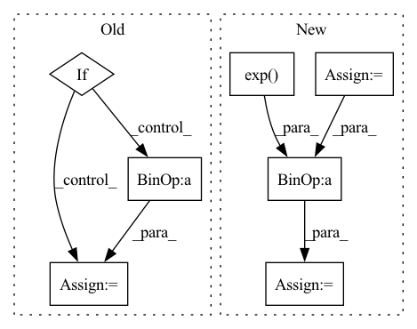

Pattern ID :4674
Before Change
z_ = self.loc + torch.exp(self.log_scale) * eps
acc = self.a(z_)
if self.training or self.Z == None:
if i == 0:
Z_batch = torch.mean(acc)
Z_sum = torch.sum(acc).detach()
else:
Z_sum = Z_sum + torch.sum(acc).detach()
n = n + num_samples
dec = torch.rand_like(acc) < acc
for j, dec_ in enumerate(dec):After Change
s = 0
n = 0
for i in range(self.T):
eps = torch.randn((num_samples, self.d), dtype=self.loc.dtype, device=self.loc.device)
z_ = self.loc + torch.exp( self.log_scale) * eps
acc = self.a(z_)
if self.training or self.Z == None:In pattern: SUPERPATTERN
Frequency: 3
Non-data size: 7
Instances Fragment ID: 16742780
Project Name: vincentstimper/normalizing-flows
Commit Name: 7d58159119f4ea9785682b1726a8243124c84c04
Time: 2020-08-18
Author: vincent.stimper@gmail.com
File Name: normflow/distributions.py
M Class Name: ResampledGaussian
N Class Name: ResampledGaussian
M Method Name: forward(2)
N Method Name: forward(2)
M Parent Class: BaseDistribution
N Parent Class: BaseDistribution
M File Name: normflow/distributions.py
N File Name: normflow/distributions.py
M Start Line: 91
M End Line: 125
N Start Line: 93
N End Line: 129
Before Change
negative_distance = distance * (1 - labels)
loss = (self.loss_margin - positive_distance) + (self.loss_margin - negative_distance)
loss = loss.mean()
elif = - F.log_softmax(distance_matrix).sum()
else:
raise ValueError(f"Contrastive loss type {self.contrastive_loss_type} not supported")
return lossAfter Change
positive_examples_2 = torch.diag(distance_matrix, -self.batch_size)
positive_examples = torch.cat([positive_examples_1, positive_examples_2], dim=0)
mask = (~torch.eye(self.batch_size * 2, self.batch_size * 2, dtype=torch.bool)).to(self.device)
numerator = torch.exp( positive_examples)
denominator = (mask * torch.exp(distance_matrix)).sum(dim=1)
softmax = numerator / denominator
loss = - torch.log(softmax)
loss = loss.mean()
else:
raise ValueError(f"Contrastive loss type {self.contrastive_loss_type} not supported") Fragment ID: 16742906
Project Name: aditeyabaral/calbert
Commit Name: b2c6c9c898a60942ede94ec997b82d864b7fdabb
Time: 2022-07-21
Author: aditeya.baral@gmail.com
File Name: calbert/SiamesePreTrainer.py
M Class Name: SiamesePreTrainer
N Class Name: SiamesePreTrainer
M Method Name: calculate_contrastive_loss(4)
N Method Name: calculate_contrastive_loss(4)
M Parent Class:
N Parent Class:
M File Name: calbert/SiamesePreTrainer.py
N File Name: calbert/SiamesePreTrainer.py
M Start Line: 153
M End Line: 157
N Start Line: 153
N End Line: 165
Before Change
obji = self.BCEobj(pi[..., 4], tobj)
lobj += obji * self.balance[i] // obj loss
if self.autobalance:
self.balance[i] = self.balance[i] * 0.9999 + 0.0001 / obji.detach().item()
if self.autobalance:
self.balance = [x / self.balance[self.ssi] for x in self.balance]
lbox *= self.hyp["box"]
lobj *= self.hyp["obj"]
lcls *= self.hyp["cls"]After Change
lkps *= self.hyp["kp"]
if self.autobalance:
loss = (lbox + lobj + lcls) / (torch.exp( 2 * self.loss_coeffs[0])) + self.loss_coeffs[0]
loss += lkps / (torch.exp(2 * self.loss_coeffs[1])) + self.loss_coeffs[1]
else:
loss = lbox + lobj + lcls + lkps
Fragment ID: 16742901
Project Name: wmcnally/kapao
Commit Name: 551cb6ae16b1da8b5d671c1c4fbd0ddcf0258ab3
Time: 2021-11-02
Author: wmcnally@uwaterloo.ca
File Name: utils/loss.py
M Class Name: ComputeLoss
N Class Name: ComputeLoss
M Method Name: __call__(3)
N Method Name: __call__(3)
M Parent Class:
N Parent Class:
M File Name: utils/loss.py
N File Name: utils/loss.py
M Start Line: 129
M End Line: 190
N Start Line: 131
N End Line: 198